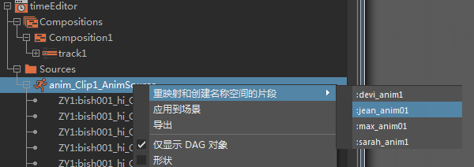

可以使用名称空间重映射动画。
- 确保名称空间有层次，并且所有对象均以递归方式映射到选定的名称空间下。请参见创建名称空间。
- 在 timeEditor
“大纲视图”(Outliner)节点下的动画源上单击鼠标右键，然后选择“从名称空间重映射和创建片段”(Remap and create clip from Namespace)。此菜单将列出场景中当前存在的所有名称空间。

- 选择列出的名称空间之一，将显示名单映射器(Roster Mapper)，以便将动画源中的对象名称映射到选定名称空间中的相同对象名称。使用名单映射器(Roster Mapper)可更改映射或删除不需要的映射。
- 若要在当前时间标记处将映射结果应用于当前选定轨迹（或新轨迹）上的片段，请确保片段层次与名单映射器(Roster Mapper)中映射的内容匹配。
提示： 如果在时间编辑器中已存在的片段上单击鼠标右键，然后从
时间编辑器“片段”(Clip)上下文菜单中选择
“重映射”(Remap)，则可对该片段执行相同的过程。这将在新轨迹上创建该片段。但是，如果在轨迹（而不是片段）上单击鼠标右键，则可通过定位希望显示片段的当前时间标记来选择将创建片段的位置。